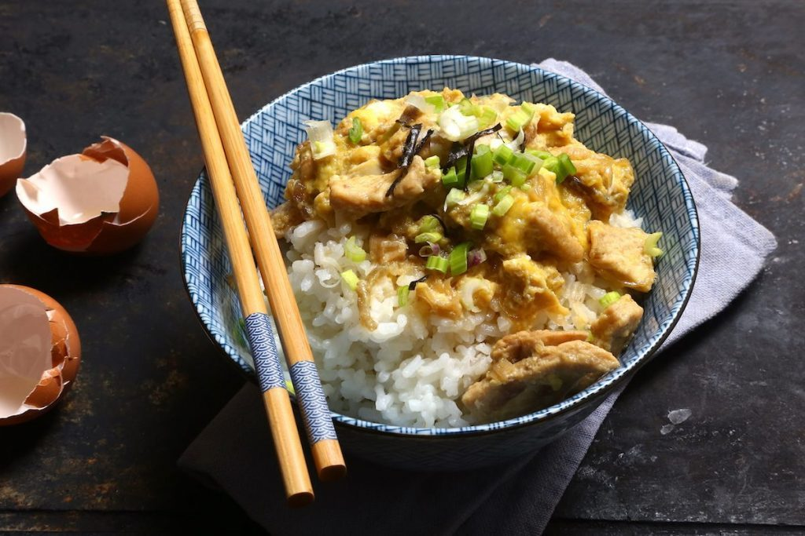

Oyakodon

Oyakodon is a traditional Japanese comfort dish. Literally 'parent and child bowl', the chicken and eggs pair with the slightly
sweet soy and sake sauce to make a dish that warms you up and teleports you back home in an instant. Serves 1.
Ingredients
- 1/4lb chicken breast or tigh, cut into small pieces or strips
- 2 large eggs, lightly beaten
- 1/4 small sweet onion, in crescents
- 1tsp sesame oil
- 2oz sake
- 1oz mirin
- 3oz soy sauce
- scallion, sesame seeds, togarashi, soy, sesame oil, etc for garnish
- Cokked short grain white rice to serve over
Preperation
- Heat the sesame oil in a nonstick skillet, then add chicken and saute for 3-4 minutes until outside is fully cooked, adding onion after a minute.
- Add liquids and let come to a simmer for another 3 min, the slowly drizzle in the egg, agitating midair with chopsticks to evenly distribute.
\
- Cover and let cook for 1-3 minutes, keeping an eye on the egg. The goal is to just barely set but still pourable.
- Transfer directly from pan to the top of a bowl of rice, all liquid included. Garnish to taste and enjoy.
Return to homepage